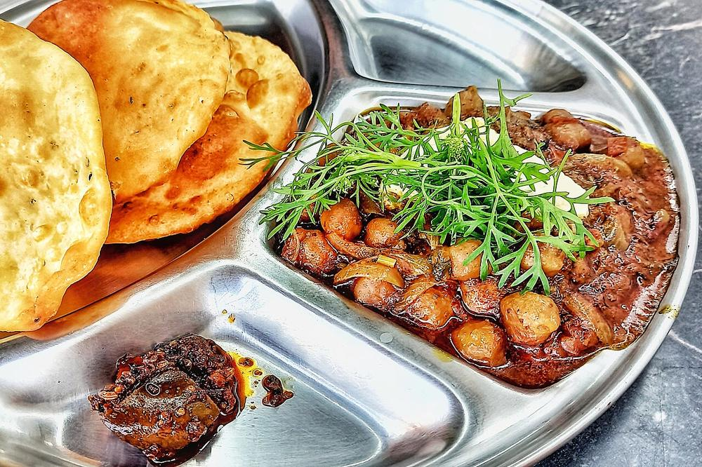

Pindi Chole
dark, dry rawalpindi chickpeas soured with pomegranate seed and amchur, no onion or tomato

Start the day before. The soaking alone is 8 hr, against 80 min of actual work.
Allergens: none of the ten listed below
Ingredients
Quantities for 4.
- 250g dried, soaked overnight Chickpeas
- 1/4 tsp Baking Sodasoftens the skins in the cooker
- 2 Black Cardamomtied in the boil, this is what blackens the chickpeas
- 1 stick, 3cm Cinnamonin the boil
- 2 Bay Leafin the boil
- 4 Clovesin the boil
- 2 tbsp, coarsely ground Anardanathe defining sourness
- 1.5 tsp Amchur
- 2 tsp Coriander Powder
- 1.5 tsp, roasted Cumin Powder
- 1 tsp, coarsely crushed Black Pepper
- 1/2 tsp Dry Ginger Powder
- 1/2 tsp Ajwain
- 1 tsp Chilli Powder
- 1 tsp Garam Masala
- 3/4 tsp Black Salt
- 1/4 tsp Asafoetidause compounded-free hing to keep this gluten-free
- 4 tbsp Neutral Oilor ghee, which takes it out of vegan
- 4cm, cut into fine matchsticks Gingerhalf in, half over the top
- 3, slit Green Chilli
- 3 tbsp, chopped Coriander Leavesoptional
- 3 tbsp seeds Pomegranateto scatter overoptional
- 1, in wedges Lemonoptional
- to taste Salt
- 1 litre for boiling Water
Cookware
pressure cooker, kadhai, stovetop
Checked against the ingredient list for ten allergens: milk, egg, fish, crustaceans, tree nuts, peanuts, sesame, mustard, soy and gluten. Brands vary, so read the label on anything new to you.
Before you start
- Soak the chickpeas overnight in plenty of water with a pinch of salt. Under-soaked chana takes much longer to go floury, and some of it never quite gets there while the rest collapses.
- Traditionally a tea bag or a few dried amla pieces are dropped into the boil to blacken the chickpeas. Whole black cardamom, cinnamon, cloves and bay do the same job and taste better.
- Grind the anardana coarsely just before cooking. Ready-ground pomegranate powder goes flat within weeks.
Method
- Tie the black cardamom, cinnamon, bay and cloves in a small muslin bundle. Pressure cook the drained chickpeas with the bundle, the baking soda, salt and 1 litre of water for 5 whistles, then 15 minutes on low.The chickpeas should crush to paste between thumb and finger. If they still have a bite, cook them longer before you go anywhere near the masala.
- Lift out the spice bundle and squeeze it against the side of the pot. Drain the chickpeas but keep 300ml of the black cooking liquor.
- Dry-roast the ground anardana, coriander powder, cumin powder, crushed pepper, dry ginger and amchur in a kadhai over low heat for 90 seconds, until the pan smells sharp and toasty. Tip onto a plate.This is the whole flavour of pindi chole. Off the heat the second it smells nutty. Burnt anardana turns acrid.
- Heat the oil in the same kadhai, add the ajwain and asafoetida and let them foam for 10 seconds.
- Add half the ginger matchsticks and the slit green chillies and fry 1 minute, until the ginger turns pale gold at the edges.
- Return the roasted spice mix, add the chilli powder and black salt, and stir for 30 seconds.
- Tip in the chickpeas and toss until every one is coated and dark. Add 200ml of the reserved liquor.
- Cook uncovered on medium for 12-15 minutes, mashing about a fifth of the chickpeas against the pan, until the liquid has gone and the mass is glossy and almost dry.Pindi chole is a dry dish. If it looks like gravy, keep cooking.
- Sprinkle over the garam masala, cover and rest off the heat for 5 minutes.
- Scatter the remaining ginger matchsticks, coriander and pomegranate seeds over the top and serve with lemon wedges and kulcha or bhatura.
Storage
Keeps 4 days refrigerated and genuinely improves on day two. Reheat in a pan with 3-4 tbsp water, not in a microwave, or the chickpeas dry out.
Nutrition Low estimate
Medium protein: 14 g a serving, 14% of the calories
| Per serving277 g | Per 100 g | |
|---|---|---|
| Calories | 401 kcal | 146 kcal |
| Protein | 14.3 g | 5 g |
| Carbohydrate | 48.6 g | 18 g |
| of which sugars | 11.0 g | 4 g |
| Fibre | 10.4 g | 4 g |
| Fat | 18.5 g | 7 g |
| of which saturated | 1.9 g | 1 g |
| of which unsaturated | 14.8 g | 5 g |
Whey poured away when the milk is curdled means much of the weighed input is never eaten, so the real figures are likely lower. Nearest database match used for amchur, asafoetida, black salt, garam masala. Estimated from raw ingredients using USDA FoodData Central.
More like this: Healthy Indian recipes · Vegan Indian recipes · Vegetarian Indian recipes · Gluten-free Indian recipes · Dairy-free Indian recipes · No onion no garlic recipes · Punjabi recipes
Times, yields, allergens and nutrition are guidance. Use your own judgement on doneness and on storing. More in About.